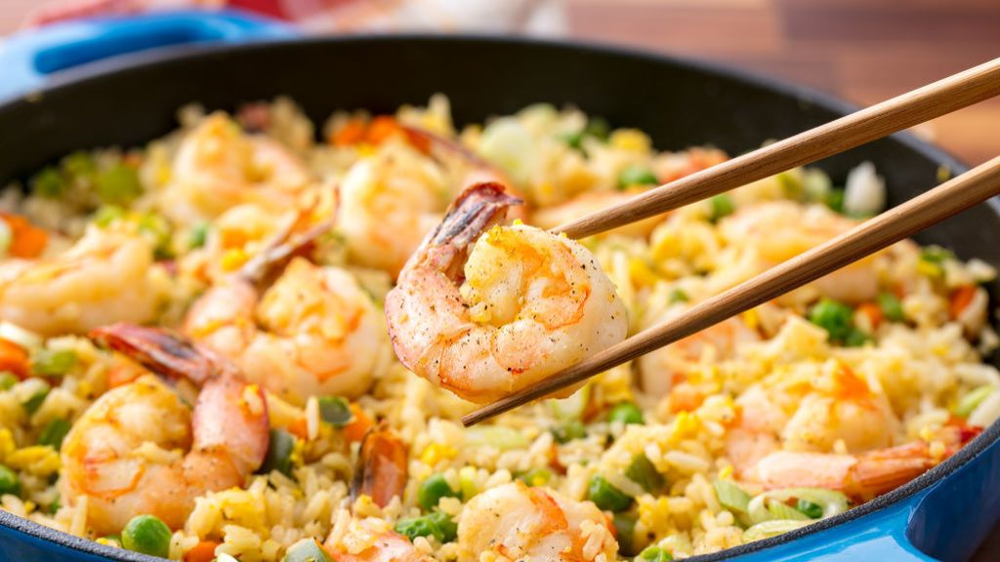

Shrimp Fried Rice

"Invincibility lies in the defence; the possibility of victory in the
attack."
On this page is the scrumptious shrimp fried rice that I think is pretty
good.
You can be your own judge, and try the recipe out to see how it tastes!
Traditionally cooked in a wok over high heat, Chinese fried rice is
perhaps the most genius recipe for using up leftover rice. If you
don't have any leftover rice, do not fear! You can
totally use freshly made—just make sure to rinse your rice beforehand to
reduce the chances of the rice clumping
Ingredients
- 2 tablespoons of soysauce
- 2 teaspoons of seasame oil
- 2 teaspoons of granulated sugar
- 2 gloves of minced garlic
- one 1" piece giner, peeled and minced
- 3 tablespoons of vegetable oil, divided
- 2 carrots chopped
- 1 green bell pepper
- 1 pound of shrimp
- 2 large eggs
- 3 c. cooked white rice
- frozen peas
Instructions:
- In a small bowl, combine soy sauce, sesame oil, sugar if using,
ginger, and garlic.
- In a large skillet over medium-high heat, heat 1 tablespoon oil. Add
carrots and peppers and sauté until partially tender, about, 3 minutes,
then add shrimp and cook, 4 minutes, or until pink and opaque, stirring
occasionally. Remove shrimp and vegetables from skillet and wipe out
pan.
- Add remaining oil to skillet, then add beaten eggs and cook, stirring
frequently, until curds begin to form, about 30 seconds. Push eggs to
the side of the skillet, then add rice and soy sauce mixture. Stir to
combine everything in the skillet, then press rice into an even layer
and let cook undisturbed until a golden crust forms where the rice
touches the bottom of the skillet, about 4 to 5 minutes.
- Stir in cooked shrimp and vegetables, as well as the peas, and toss
until all ingredients are heated through, 1 to 2 minutes more.
- You're done! Serve topped with green onions and sriracha
enjoy!!
back to top
Back to home page